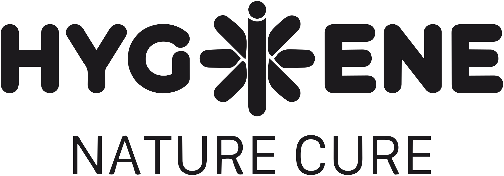
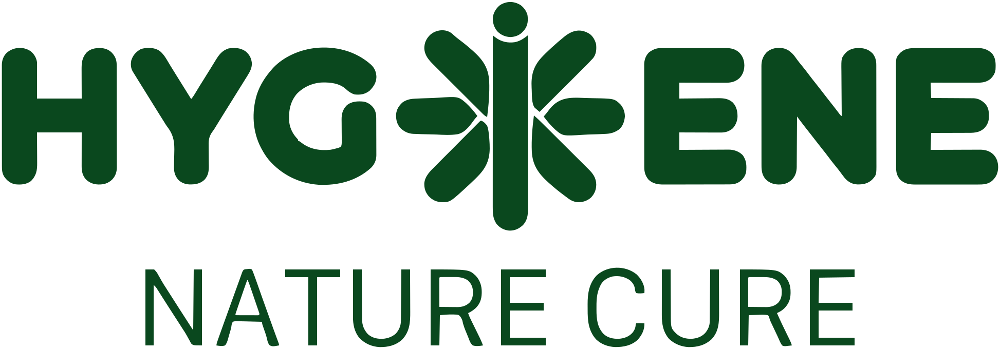

Full wordmark. The symbol stands in for the letter I



The same lockup, without Nature Cure
Icon only, where the name already reads
assets/hnch/logo-*.svg, hygiene-*.svg and icon-*.svgdark #1C1A1D · light #FFFFFF · green #0A481E · current<HnchLogo mark="full" /> · <HnchLogo mark="hygiene" />Logo.Taken from hygienecure.com on 17 October 2026. The site served PNG artwork wrapped in an SVG. These files are traced vectors of that artwork, one colour, so the mark can sit on a light ground, on their green, or on Pine Tree. The Hygiene row is that lockup with the Nature Cure line removed. Do not redraw, outline, stretch or recolour it into Himalaya or Gold Crayola.